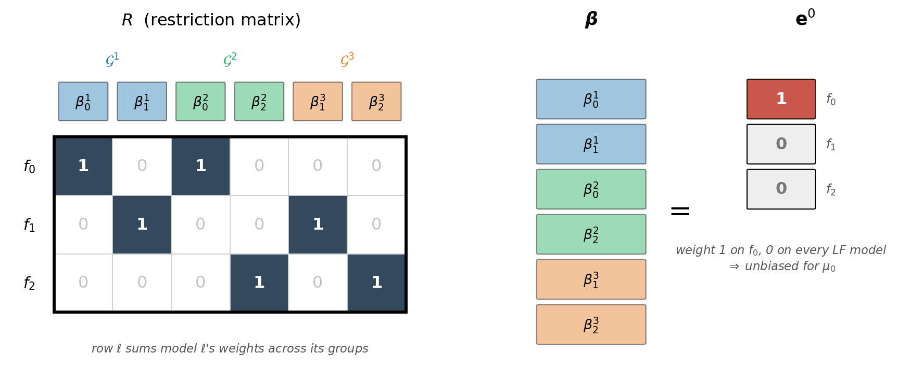
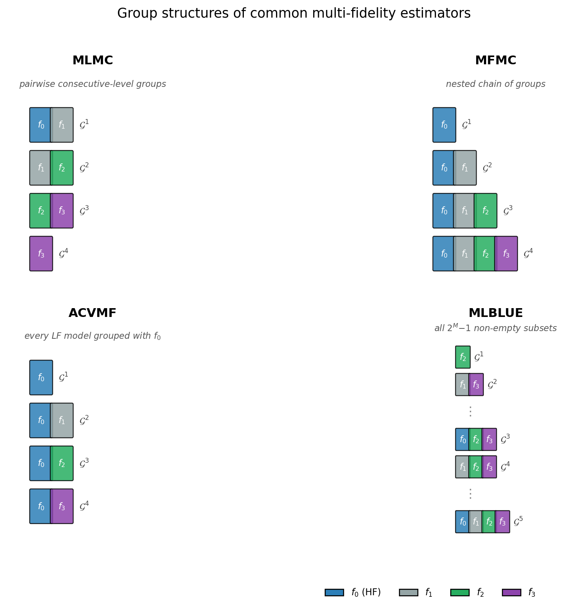
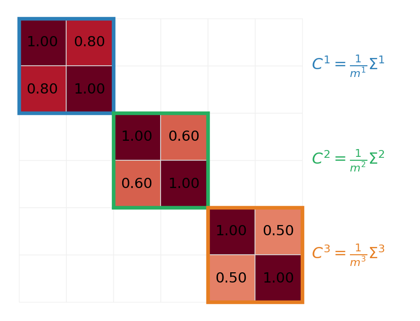
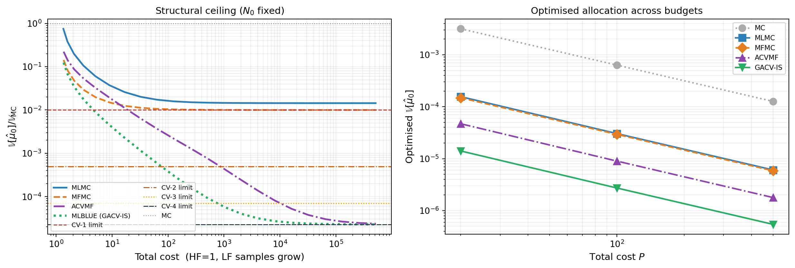
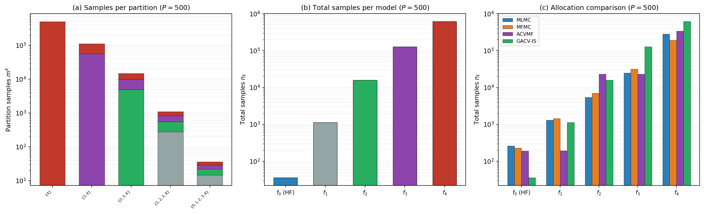

Group Approximate Control Variates
PyApprox Tutorial Library
A single framework — groups of co-evaluated models — that recovers MLMC, MFMC, ACVMF, and MLBLUE as special cases, and extends naturally to multi-output, multi-statistic, and mixed-known-stat estimation.
TipDownload Notebook
Learning Objectives
After completing this tutorial, you will be able to:
- Define a group as the fundamental object of multi-fidelity estimation: a subset of models co-evaluated on a shared set of input samples
- Write the group ACV estimator and identify the per-group weights and the unbiasedness constraint
- Recognize MLMC, MFMC, ACVMF, and MLBLUE as five points in a single design space that differ only in their group structure
- State the optimal-weight result and use it to compute estimator variance for any group collection
- Identify the three extensions — multi-output, multi-statistic, and mixed known statistics — that the framework unlocks without modification
Prerequisites
Complete General ACV Concept and MLBLUE Concept before this tutorial. Those tutorials present the ACV family and MLBLUE as separate machinery. This tutorial shows that they are two parameterizations of one underlying framework — group approximate control variates (GACV) [GJE2024] — and explains why that perspective matters for the practical estimators you can build.
Why Unify?
The estimators developed so far solve the same problem — reduce the variance of an expensive HF mean estimate using correlated LF models — through what look like very different mechanisms. MLMC uses a telescoping sum of level differences. MFMC builds a recursive chain of nested corrections. ACVMF replaces the chain with a star, correcting \(f_0\) directly with every LF model. MLBLUE frames the problem as generalized least squares, which appears to abandon the corrections viewpoint — but as the group ACV theory shows, MLBLUE is actually a special case of the same correction framework with a different group structure.
The first reason to unify these is conceptual: they really are the same estimator. Each picks a particular group structure — a collection of model subsets that share input samples — and the optimal weights, the variance formula, and the allocation problem follow from that one choice.
The second reason is practical, and more interesting: once the framework is in place, three substantial generalizations become available without changing any of the underlying math. These are the draw cards of group ACV:
- Multiple QoIs. Estimate several quantities of interest jointly under a shared group structure. The resulting multi-output ACV optimizes a joint objective (determinant or trace of the estimator covariance matrix) over the shared sample allocation — something that requires a single group structure serving all QoIs simultaneously.
- Statistics beyond the mean. Estimate variances, mean-and-variance jointly, or any moment-based statistic using the same group machinery and the same optimal-weight result.
- Mixed known statistics. When some LF models have analytic moments (polynomial surrogates, Gaussian process posteriors, reference Monte Carlo) and others do not, the framework exploits both in a single estimator that interpolates between full CVMC and full ACV.
None of these extensions emerge naturally from the MLMC telescoping identity, the MFMC recursive derivation, or the MLBLUE GLS framing taken in isolation. They emerge from the group framework, and that is the reason it exists.
The Group ACV Ansatz
A group is a pair \[ \mathcal{G}^k = (\mathcal{S}^k, m^k), \] where \(\mathcal{S}^k \subseteq \{0, 1, \ldots, M\}\) is a non-empty subset of model indices and \(m^k \geq 0\) is an integer sample count. In the standard (and most common) setup, each group’s \(m^k\) input samples are drawn independently from the prior, and every model in \(\mathcal{S}^k\) is evaluated at each of those samples. More generally, groups may share samples (nested designs) or use importance-weighted samples from a different distribution; see [GJE2024] for the general case.
The estimator specification is a collection of groups \(\{\mathcal{G}^k\}_{k=1}^K\). For each group, define the per-group sample-mean vector \[ \hat{\mathbf{Q}}^k = \left(\hat{\mu}_\ell^k\right)_{\ell \in \mathcal{S}^k} \in \mathbb{R}^{|\mathcal{S}^k|}, \qquad \hat{\mu}_\ell^k = \frac{1}{m^k}\sum_{i=1}^{m^k} f_\ell\!\left(\boldsymbol{\theta}_k^{(i)}\right). \]
Each entry is unbiased for the corresponding model mean: \(\mathbb{E}[\hat{\mu}_\ell^k] = \mu_\ell\).
The group ACV estimator combines these per-group estimators with weights \(\boldsymbol{\beta}^k \in \mathbb{R}^{|\mathcal{S}^k|}\) chosen by the framework: \[ \hat{Q}_{\text{GACV}} = \sum_{k=1}^{K} (\boldsymbol{\beta}^k)^{\!\top} \hat{\mathbf{Q}}^k. \tag{1}\]
The user picks the group collection. The framework picks the weights. Every multi-fidelity estimator in the previous tutorials is an instance of Equation 1 with a particular group collection and (sometimes) particular fixed weights.
Unbiasedness and the Restriction Matrix
Taking expectations in Equation 1, \[ \mathbb{E}[\hat{Q}_{\text{GACV}}] = \sum_k (\boldsymbol{\beta}^k)^{\!\top} \boldsymbol{\mu}^k = \sum_{\ell = 0}^{M} s_\ell\, \mu_\ell, \qquad s_\ell := \sum_{k : \ell \in \mathcal{S}^k} \beta^k_\ell, \] where \(s_\ell\) is the total weight assigned to model \(\ell\) across all groups in which it appears.
For \(\hat{Q}_{\text{GACV}}\) to be unbiased for \(\mu_0\) regardless of the unknown mean values, we require \[ s_0 = 1, \qquad s_\ell = 0 \text{ for } \ell = 1, \ldots, M. \tag{2}\]
Writing \(\boldsymbol{\beta}\) for the long vector that stacks all per-group weights, Equation 2 is the linear constraint \[ R\, \boldsymbol{\beta} = \mathbf{e}^0, \tag{3}\] where the restriction matrix \(R \in \mathbb{R}^{(M+1) \times \sum_k |\mathcal{S}^k|}\) has rows that sum the weights for each model across groups, and \(\mathbf{e}^0 = (1, 0, \ldots, 0)^\top \in \mathbb{R}^{M+1}\).
The constraint Equation 3 is the only structural requirement on the weights. The framework’s job is to pick \(\boldsymbol{\beta}\) satisfying Equation 3 that minimizes estimator variance.
To make \(R\) concrete, take three models and the collection \(\mathcal{G}^1=\{f_0,f_1\}\), \(\mathcal{G}^2=\{f_0,f_2\}\), \(\mathcal{G}^3=\{f_1,f_2\}\) — three pairs, each evaluated on its own independent samples. Stacking the per-group weights gives \(\boldsymbol{\beta}=(\beta^1_0,\beta^1_1,\beta^2_0,\beta^2_2,\beta^3_1,\beta^3_2)\), so \(R\) has \(M+1=3\) rows and \(\sum_k|\mathcal{S}^k|=6\) columns (Figure 1). Each column is the standard basis vector of the single model that weight multiplies; each row collects one model’s weights across the groups it appears in. The constraint \(R\boldsymbol{\beta}=\mathbf{e}^0\) then reads plainly: the \(f_0\) weights sum to one (\(\beta^1_0+\beta^2_0=1\)) and each low-fidelity model’s weights cancel (\(\beta^1_1+\beta^3_1=0\), \(\beta^2_2+\beta^3_2=0\)). That cancellation is the control-variate mechanism, and it explains a design rule: a low-fidelity model reduces variance only by appearing in at least two groups whose weights offset. A model placed in a single group has its weight forced to zero by the constraint and cannot contribute.
The Group Structure Dictionary
The choice of group collection determines which familiar estimator Equation 1 specializes to.

Reading Figure 2: each panel is one estimator. The MLMC panel shows the pairwise structure underlying its telescoping sum: groups \(\{f_0, f_1\}, \{f_1, f_2\}, \{f_2, f_3\}\) plus a singleton \(\{f_3\}\) for the coarsest level, with independent samples across groups. The MFMC panel shows the nested chain: \(\{f_0\}, \{f_0, f_1\}, \{f_0, f_1, f_2\}, \{f_0, f_1, f_2, f_3\}\). The ACVMF panel shows the star: every LF model grouped with the HF model and anchored on the same sample partition. The MLBLUE panel shows all \(2^M - 1 = 15\) non-empty subsets of the four-model ensemble — the complete search space that the allocation optimizer explores.
Each pattern is a valid choice of \(\{\mathcal{G}^k\}\) in Equation 1. The optimal weights and the variance are determined entirely by which groups appear and which sample counts they have.
The Optimal-Weight Result
Stack the per-group estimators into a long vector \(\hat{\mathbf{Q}} = (\hat{\mathbf{Q}}^1, \ldots, \hat{\mathbf{Q}}^K)\). The covariance \(C = \mathrm{Cov}(\hat{\mathbf{Q}}, \hat{\mathbf{Q}})\) depends on the group structure: groups with disjoint sample sets contribute independent blocks; groups with shared sample sets contribute coupled blocks. For independent-samples designs (every group draws its own samples), \(C\) is block-diagonal with per-group blocks \(C^k = (1/m^k)\,\boldsymbol{\Sigma}^k\), where \(\boldsymbol{\Sigma}^k\) is the population covariance among the models in \(\mathcal{S}^k\).
Figure 3 shows that block structure for the same three-pair collection. Because every group draws its own independent samples, a model’s sample mean in one group is uncorrelated with its sample mean in any other — sharing a model symbol across groups does not share the randomness. Every cross-group block of \(C\) is therefore exactly zero, and \(C\) reduces to a block diagonal of the per-group covariances \(C^k=\tfrac{1}{m^k}\Sigma^k\), each a \(|\mathcal{S}^k|\times|\mathcal{S}^k|\) slice of \(\boldsymbol{\Sigma}\). The columns of \(C\) are ordered exactly as the columns of \(R\) in Figure 1, so the two compose directly in Equation 4. This clean block diagonal is special to the independent-samples regime: nested and shared-anchor designs (MFMC, classical ACVMF) reuse samples across groups and fill in the off-diagonal blocks (see Group ACV Analysis).

Minimizing \(\boldsymbol{\beta}^{\!\top} C\, \boldsymbol{\beta}\) subject to Equation 3 gives the optimal group ACV weight [GJE2024, Theorem 6]: \[ \boldsymbol{\beta}^{\star} = C^{-1} R^{\!\top} \left(R\, C^{-1} R^{\!\top}\right)^{-1} \mathbf{e}^0 \tag{4}\] and the corresponding minimum variance \[ \mathbb{V}\!\left[\hat{Q}_{\text{GACV}}\right]_{\boldsymbol{\beta} = \boldsymbol{\beta}^{\star}} = (\mathbf{e}^0)^{\!\top} \left(R\, C^{-1} R^{\!\top}\right)^{-1} \mathbf{e}^0. \tag{5}\]
The result is a constrained generalized least squares solution. The Group ACV Analysis tutorial derives Equation 4 and Equation 5 via the Lagrangian.
Crucially, the same formula applies to every group structure. What changes between MLMC, MFMC, ACVMF, MLBLUE is the structure of \(R\) and \(C\) — derived from the group collection — not the optimization principle itself.
Specializations
The following table maps each familiar estimator to its group structure and the specialization of Equation 4.
| Estimator | Group structure | Notes on \(\boldsymbol{\beta}^{\star}\) |
|---|---|---|
| MC | one group \(\{f_0\}\) | trivially \(\boldsymbol{\beta}^{\star} = 1\) |
| MLMC | pairwise \(\{f_\ell, f_{\ell+1}\}\), independent samples | weights fixed at \((1, -1)\) per group; not the optimum within the framework |
| MFMC | nested \(\{f_0\} \subset \{f_0, f_1\} \subset \cdots\), dependent samples | optimum reduces to the MFMC weight ratios |
| ACVMF | \(\{f_0, f_\alpha\}\) per LF model \(\alpha\), anchored on \(\mathcal{Z}_0\) | optimum reduces to the Schur complement of acv_many_models_analysis |
| MLBLUE (IS) | arbitrary subsets, independent samples | optimum is mlblue_analysis’s GLS solution |
Two facts worth noting. First, MLMC is suboptimal in the framework: it fixes \(\boldsymbol{\beta}^k = (1, -1)\) rather than picking \(\boldsymbol{\beta}^k\) via Equation 4. This is the price MLMC pays for its independent-samples-across- levels structure — under that structure, the fixed weights are nearly optimal when consecutive levels are highly similar, but not exactly. Second, ACVMF and MLBLUE-IS achieve the same minimum variance when given the same model set, even though their group structures look very different. They are two parameterizations that span overlapping regions of the design space.
Why the Unification Matters: a Convergence View
The structural differences in Figure 2 translate into quantitatively different variance reductions. Figure 4 compares the four estimators on a five-model polynomial benchmark. The covariance matrix \(\boldsymbol{\Sigma}\) is computed via exact Gauss quadrature on the known polynomial model functions.

The two panels of Figure 4 tell related but distinct stories. The left panel is the structural story: with \(N_0\) fixed, how low can each estimator go? MLMC and MFMC are capped at CV-1 because only their first LF model directly reduces \(\hat{\mu}_0\) variance; the other LF models indirectly improve the chain but cannot break the ceiling. ACVMF and MLBLUE-IS, by contrast, aggregate all LF information into \(\hat{\mu}_0\)’s variance reduction simultaneously and converge to CV-\(M\). The right panel is the practical story: under an optimized budget allocation, the variance of each estimator at three target costs. The ordering is consistent with the ceilings but the magnitude depends on how much budget is available.
The point of the figure is not to crown a winner. ACVMF and MLBLUE-IS both reach CV-\(M\) and so are equivalent in the asymptotic sense; the choice between them is a matter of which parameterization is easier to construct for the problem at hand (see “ACV vs MLBLUE” below). MLMC and MFMC remain useful when the natural hierarchy of the problem aligns with their chain structure, despite the structural ceiling. The unification framework lets you reason about all four estimators with a single mental model.
The Allocation Problem
As with CVMC and ACV, the goal is to choose the estimator’s free parameters to minimize variance subject to a computational budget:
\[ \min_{\{m^k\},\, \boldsymbol{\beta}} \; \mathbb{V}[\hat{Q}_{\text{GACV}}] \quad \text{subject to} \quad \sum_{k=1}^{K} m^k\, c^k \leq P, \tag{6}\]
where \(c^k = \sum_{\ell \in \mathcal{S}^k} c_\ell\) is the per-sample cost of partition \(k\) (the sum of the costs of all models co-evaluated in that group).
The weights \(\boldsymbol{\beta}\) and the sample counts \(\{m^k\}\) decouple: for any fixed allocation, the optimal weights are given by Equation 4; for any fixed weights, the optimal allocation is a constrained optimization over the \(K\) sample counts. In practice, the framework plugs Equation 4 into Equation 5 and optimizes over \(\{m^k\}\) alone — a \(K\)-dimensional problem that the allocation optimizer tutorial covers in detail.
The complexity of the allocation problem grows with the estimator. CVMC has one free parameter (\(N\)) and a closed-form solution. Two-model ACV adds a single partition ratio \(r\) with a closed-form optimum. The many-model ACV estimator has \(M\) partition ratios and requires numerical optimization. Group ACV has \(K\) partition sample counts — potentially \(2^M - 1\) for the full subset collection — and the allocation is a high-dimensional constrained optimization problem. The Group ACV Optimization tutorial covers the practical solver recipe (SLSQP + log-space scaling).
Sample Allocation Across Models
Once the optimizer solves Equation 6 and returns the per-partition sample counts \(\{m^k\}_{k=1}^K\), the total number of samples assigned to model \(\ell\) is
\[ n_\ell = \sum_{k\,:\,\ell \in \mathcal{S}^k} m^k, \tag{7}\]
because model \(\ell\) is evaluated on every sample in every partition whose subset contains \(\ell\). A cheap LF model that appears in many subsets accumulates samples from all of them; the expensive HF model typically appears in fewer subsets and receives correspondingly fewer samples.
The total computational cost is \[ P = \sum_{\ell=0}^{M} c_\ell\, n_\ell = \sum_{k=1}^{K} m^k \underbrace{\sum_{\ell \in \mathcal{S}^k} c_\ell}_{c^k}, \] where \(c^k\) is the per-sample cost of partition \(k\) — the sum of the costs of all models evaluated together in that group.
Figure 5 shows the optimized allocation for the five-model polynomial benchmark at budget \(P = 500\).

Three features of Figure 5 are worth noting.
First, most partitions are inactive. The optimizer drives \(m^k \to 0\) for subsets that do not contribute to variance reduction, concentrating the budget on the handful of subsets that carry signal. This is a key practical advantage of the group ACV framework over enumeration-based approaches that must evaluate every subset.
Second, the per-model sample counts in panel (b) span several orders of magnitude. The HF model \(f_0\) — the most expensive — receives the fewest samples, while the cheapest LF model receives the most. This is the same cost-balancing principle that underlies all multi-fidelity estimators, but expressed through the partition allocation rather than through explicit sample ratios.
Third, panel (c) shows that the four estimators produce qualitatively different allocations at the same budget. MLMC and MFMC, constrained to pairwise and nested group structures, allocate heavily to the cheapest model but cannot exploit all pairwise correlations. ACVMF and GACV-IS, with richer group structures, spread the budget across all models more aggressively, which is why they achieve lower variance in Figure 4.
ACV vs MLBLUE: One Framework, Two Parameterizations
The ACV family parameterizes group structures via an allocation matrix over independent partitions and a recursion index that names which model corrects which (see General ACV Analysis and PACV Concept). This parameterization is natural when LF models form a hierarchy — mesh refinement, polynomial order, time-step reduction — and when chain or star correction structures map onto the problem geometry.
MLBLUE parameterizes group structures via arbitrary subsets, with no chain or nesting required. This parameterization is natural when the LF models do not form a hierarchy, or when certain pairs cannot be co-evaluated for physical reasons (incompatible meshes, models requiring different numerical schemes).
Both parameterizations reach the multi-model CV-\(M\) ceiling, and both rely on Equation 4 for the optimal weights. The choice between them is about expressiveness for the specific problem, not about variance-reduction power.
In PyApprox: ACV-family estimators are MLMCEstimator, MFMCEstimator, GMFEstimator(recursion_index=...), GISEstimator. MLBLUE-family estimators are MLBLUEEstimator (mean only) and GroupACVEstimatorIS / GroupACVEstimatorNested (any statistic). See the API Cookbook for code recipes.
What Comes Next: Three Extensions
The unification is the start, not the destination. Three substantial extensions follow from Equation 1–Equation 5 without modifying the underlying framework. Each varies one ingredient of the setup while leaving the optimal-weight machinery unchanged.
Multi-output estimation. Replace the scalar QoI of each model with a vector, turning each per-group estimator \(\hat{\mathbf{Q}}^k\) into a matrix and the unbiasedness constraint into a matrix equation. The optimal-weight formula keeps its shape. The variance reduction for any single QoI improves because cross-QoI covariances within the per-group blocks become free signal. See Multi-Output ACV Concept.
Statistics beyond the mean. Replace the per-group sample-mean estimators with sample-variance or joint mean-and-variance estimators. The per-group covariance block \(C^k\) now involves higher moments of the model joint distribution (variance of variance estimators, covariance of mean and variance estimators), all computed by the stat class from pilot data. The constraint and optimal-weight formulas are unchanged. See Group ACV Multi-Statistic Concept.
Mixed known statistics. When some LF models have analytic moments and others do not, drop the rows of \(R\) corresponding to known moments. The constraint set becomes strictly smaller, the feasible weight set strictly larger, and the minimum variance strictly lower. The framework interpolates between full ACV (no moments known) and full CVMC (all moments known) along this axis. See Group ACV Mixed Concept.
These extensions are not bolted on. They are direct consequences of building the estimator around a single object (the group collection) optimized against a single constraint (Equation 3).
Key Takeaways
- A group is a (model subset, sample count) pair; an estimator is a collection of groups (Equation 1)
- MLMC, MFMC, ACVMF, and MLBLUE differ only in their group structure (see Figure 2); the optimal-weight formula Equation 4 and the variance formula Equation 5 apply identically to all of them
- The framework’s structural ceiling depends on the group collection: pairwise and nested structures cap at CV-1; star and arbitrary-subset structures reach CV-\(M\) (see Figure 4)
- The ACV family (allocation matrix + recursion index) and MLBLUE (arbitrary subsets) are two parameterizations of the same framework, suited to different problem geometries
- The framework’s value is in the extensions it enables: multi-output, multi-statistic, and mixed known statistics — each detailed in a follow-up tutorial
Exercises
From Figure 2, write the group collection \(\{\mathcal{G}^k\}\) explicitly for three-model MLMC and three-model MFMC. How many groups does each have? Which model subsets appear?
Suppose your problem has four LF models, but models \(f_1\) and \(f_3\) require incompatible numerical schemes and cannot be co-evaluated on the same sample. Which subsets must be excluded from the group collection? Sketch the largest collection consistent with this restriction and identify whether it is more naturally expressed as an ACV-family or MLBLUE-family parameterization.
Take the ACVMF group structure in Figure 2 and apply Equation 3. How many rows does \(R\) have? How many columns? Verify that \(s_0 = 1\) and \(s_\ell = 0\) for \(\ell \geq 1\) enforces unbiasedness for \(\mu_0\) in this case.
From Figure 4 (left panel), at LF sample ratio \(r = 100\), roughly how much smaller is the GACV-IS variance than the MFMC variance? Express this as a ratio of variance reductions.
Explain in one sentence why Equation 4 can be applied without modification when estimating variance instead of the mean. (Hint: think about which object in the framework changes and which stays the same.)
Next Steps
- Group ACV Analysis — Derive Equation 4 via Lagrangian, prove the specializations to MLMC/MFMC/ACVMF/MLBLUE, and connect to the sample allocation SDP
- Multi-Output ACV Concept — The multi-QoI extension of the framework
- Group ACV Multi-Statistic Concept — Variance and mean+variance estimation under group ACV
- Group ACV Mixed Concept — Mixed known statistics: the CVMC–ACV spectrum
- API Cookbook — Code recipes for every estimator discussed here
Tip
Ready to try this? See API Cookbook → Group ACV Estimators for runnable examples of GroupACVEstimatorIS, GroupACVEstimatorNested, and MLBLUEEstimator.
References
[GJE2024] A. Gorodetsky, J. Jakeman, M. Eldred. Grouped approximate control variate estimators. arXiv:2402.14736, 2024. DOI
[GGEJJCP2020] A. Gorodetsky, S. Geraci, M. Eldred, J. Jakeman. A generalized approximate control variate framework for multifidelity uncertainty quantification. Journal of Computational Physics, 408:109257, 2020. DOI
[SUSIAMUQ2020] D. Schaden, E. Ullmann. On multilevel best linear unbiased estimators. SIAM/ASA J. Uncertainty Quantification 8(2):601–635, 2020. DOI